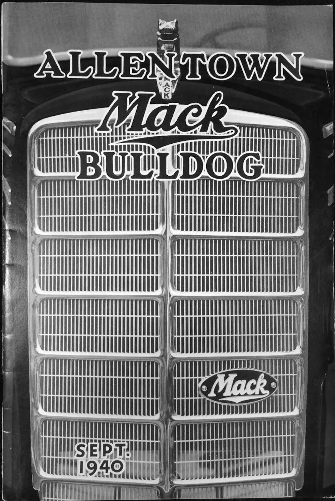

맥 트럭스 Mack Trucks
맥 트럭스(Mack Trucks)는 미국의 자동차 메이커이다. 1900년에 설립된 맥브라더 컴파니에서 출발했으며, 본사는 그린즈버러에 있고 현재 볼보트럭을 모기업으로 둔다.
최종 업데이트

맥 트럭스는 어떤 브랜드인가
맥 트럭스는 미국의 자동차 메이커로, 트럭을 비롯해 소방차와 군용 모델, 디젤 엔진 모델을 생산해 왔다. 1900년에 설립된 맥브라더 컴파니에서 출발했고 1922년에 현재의 사명으로 바꿨으며, 본사는 그린즈버러에 있다.
1990년에 르노 자동차에 인수되었고, 2001년에는 볼보 트럭이 르노 트럭과 함께 인수해 자회사로 편입시켰다. 현재 모기업은 볼보트럭이며, 스웨덴의 볼보 트럭과 프랑스의 르노 트럭이 계열사로 함께 언급된다.
과거에는 AC, CH, EH, B, F, R, N 시리즈 등 여러 트럭 시리즈를 생산했다. 현재는 북아메리카 모델과 오세아니아 모델로 나누어 생산 차종을 운영하고 있다.
맥 트럭스는 어떻게 시작되고 성장했나
맥 트럭스의 브랜드 아이덴티티는 무엇인가
맥 트럭스의 대표 제품과 서비스는 무엇인가
현재 북아메리카 시장에서는 그래니트, 타이탄, 테라프로, 피나클을 생산한다. 오세아니아 시장에서는 그래니트, 매그넘, 메트로라이너, 슈퍼라이너, 타이탄, 테라프로, 트라이던트를 생산한다.
과거 트럭 모델로는 AC 시리즈, CH 시리즈, EH 시리즈, B 시리즈, F 시리즈, R 시리즈, N 시리즈, 밸류라이너 등이 있었다. 소방차 모델로 CF-611 시리즈와 CF-700 시리즈가 있었고, 군용 모델로 M39, M123 & M125 시리즈 등이 있었다.
디젤 엔진 모델로는 MP 엔진 시리즈가 있었다.
맥 트럭스는 지금 어떤 상태인가
사진으로 보는 맥 트럭스의 역사

자주 묻는 질문
맥 트럭스는 어느 나라 브랜드인가요?
맥 트럭스는 미국의 모빌리티 브랜드입니다.
맥 트럭스는 언제 설립되었나요?
맥 트럭스는 1900년 설립되었습니다.
맥 트럭스의 브랜드 아이덴티티는 무엇인가요?
맥 트럭스는 1900년 맥브라더 컴파니에서 출발한 미국의 트럭 메이커로, 르노 자동차를 거쳐 현재 볼보 트럭 계열에 속한다.
맥 트럭스의 대표 제품은 무엇인가요?
현재 북아메리카 시장에서는 그래니트, 타이탄, 테라프로, 피나클을 생산한다.
맥 트럭스는 어느 기업이 소유하고 있나요?
맥 트럭스는 현재 볼보트럭을 모기업으로 두고 있으며, 본사는 그린즈버러에 있다.
맥 트럭스의 본사는 어디에 있나요?
맥 트럭스의 본사는 그린즈버러에 있습니다(위키데이터 기준).
맥 트럭스의 공식 웹사이트는 어디인가요?
맥 트럭스의 공식 웹사이트는 https://www.macktrucks.com 입니다.
출처와 검증
맥 트럭스 관련 참고: 공식 웹사이트 · 위키데이터 Q950650 · 한국어 위키백과 · 영어 위키백과. 브랜드명은 한글과 원어를 함께 표기하되 데이터에 없는 표기는 만들지 않습니다. 기원 국가·설립연도는 검수된 정의문에서 확인된 값을 우선하고, 없을 때만 공식 웹사이트 URL이 일치하는 위키데이터 개체의 값을 씁니다. 탄생일의 월·일은 위키데이터, 위키백과 정보상자, 본문 가운데 같은 연월로 확인되는 값만 싣고, 출처끼리 다르면 싣지 않습니다. 위키데이터 값은 2026-11-12 기준입니다.